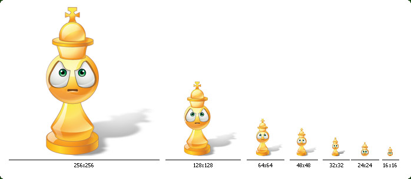
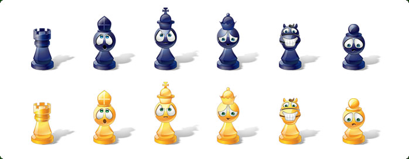
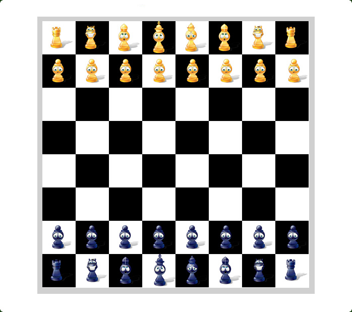

| Style: | Vista |
| Series: | Emoticons & Avatars |
| Count: | 6 |
| Variations: | 12 |
| Formats: | .PNG, .ICO |
| Colors: | TrueColor + Alpha |
| Sizes: | 16x16, 24x24, 32x32, 48x48, 64x64, 128x128, 256x256 |
| Price: | 10 USD |
Chess Emoticons icon set contains 12 chess smiley figures in Vista (Aero) style. They are suitable for Chess Games, Instant Messengers, EMail readers, Forums, Blogs, etc. Attention to details made these icons look great in all seven sizes from as low as 16x16 up to 256x256. These icons are suitable for any Operating System (Windows, Mac OS, Linux), types of software (PC, mobile, web), and any development environment you use.
King, Queen, Bishop, Knight, Rook, Pawn
Preview of one icon in all sizes: 16x16, 24x24, 32x32, 48x48, 64x64, 128x128, 256x256

Preview of icons of Vista Style Chess Emoticons

Chess Emoticons on Desk
